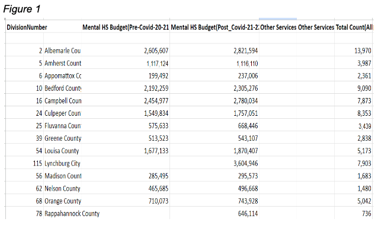

Findings: The Central Region is made up of the following counties: Amherst, Albemarle, Appomattox, Bedford, Campbell, Culpepper, Greene, Lynchburg, Louisa, Fluvanna, Maddison, Nelson, Orange, and Rapoahannock. It makes up for a decent proportion of the total population of Virginia. The figure below shows several statistics for each county that makes up the Central Region. The second column shows the mental health service budget before covid, and the third column shows the mental health service budget after covid. Through this data, it can be inferred that the introduction of the pandemic saw a general increase in the budget allocated to mental health services throughout almost every single county in the central region of Virginia. The per pupil spending also seemed to display average numbers compared to other regions within Virginia.
Even though it seems promising, some countIes still haven’t allocated nearly enough money towards mental health services; in fact, some counties lowered their budget after the pandemic. However, overall the central region of Virginia seems to be promising in their actions regarding mental health services. Compared to other regions, the central region seems to show an average performance when it comes to mental health services. Throughout the pandemic, the trend looks to be that the more time passed after the initial covid-19 pandemic, the more money and resources the central region allocated to mental health services. Based on these research findings, the central region seems to be the median bar of mental health services in Virginia.